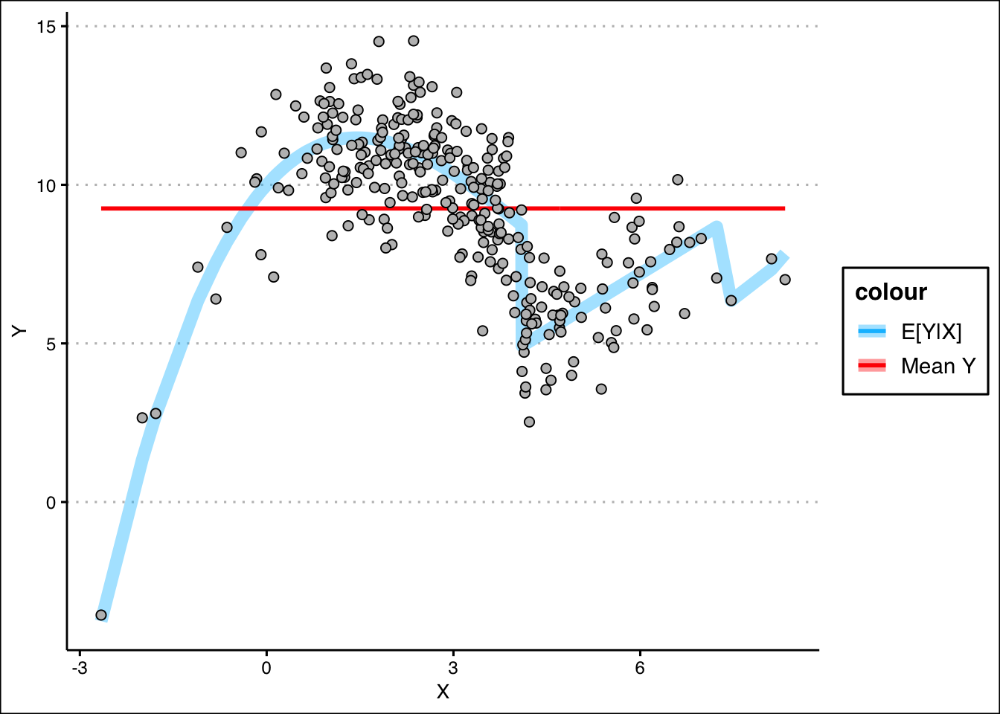
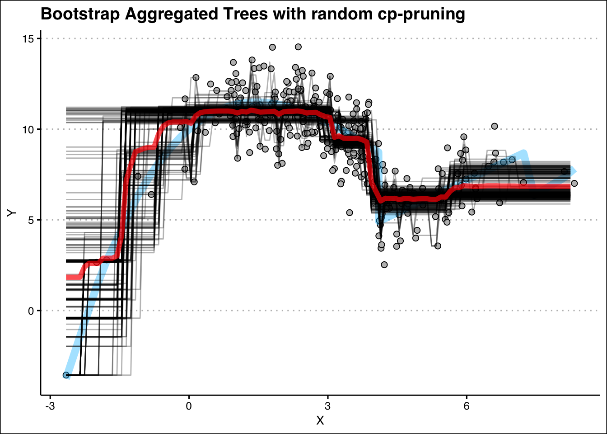

In this document we play around with growing a basic bagging techniques for a simple regression problem. We have a target feature \(Y\) and use a single predictor, \(X\). The data has been simulated so that we can easily visualize the “true” relationship between \(Y\) and \(X\) that exist in the population. This relationship is super-imposed on a scatter plot allowing us to clearly see the role of noise.
The code below generates the simulated data and plots the relationship for us to clearly see.
set.seed(1234)sim.size =300X =rnorm(sim.size, mean =3, sd =1.75)Z =rgamma(sim.size, shape =1)TRUE_Y =10+2.2*X -0.92*X^2+0.075*X^3TRUE_Y =ifelse(X >4.1& X <7.3, 1.2*X, TRUE_Y)ERROR =rnorm(sim.size, mean =0, sd =1.5)Y = TRUE_Y + ERRORdata =as.tibble(data.frame("Y"=Y, "X"=X))
Warning: `as.tibble()` was deprecated in tibble 2.0.0.
ℹ Please use `as_tibble()` instead.
ℹ The signature and semantics have changed, see `?as_tibble`.
Warning: Using `size` aesthetic for lines was deprecated in ggplot2 3.4.0.
ℹ Please use `linewidth` instead.

In the above plot, the thick transparent blue line represents the true relationship between \(X\) and \(Y\) that would enable us to make the best predictions. However, there is always noise and it affects the relationship between \(X\) and \(Y\) such that outcomes are scattered all around the blue line.
We’re going to use a machine learning method known as a decision tree (or a regression tree when applied to regression problems). This method will use a simple algorithm to gradually build a set of if-then rules which will allow us to predict \(Y\) from the value of \(X\). As the rules increase and the model gets more complex, the predicted relationship gets closer to the true one. However, if we allow the model to grow too complex (come up with too many rules based on the 1 sample), it will begin to “fit to the noise” which is overfitting. We start making rules that we shouldn’t be.
Decision trees are based on rules. For example if \(X > 5\) then predict \(Y = 10\) but if \(X \leq 5\) then predict \(Y = 7\). We stack lots of these rules in a tree-like structure to build a prediction machine. The question point, i.e., \(X > 5\), is often referred to as a threshold. We seek to choose these thresholds (and thereby build the tree) in a way that reduces prediction error with each new rule. We can measure prediction error a number of ways, but we’ll use SSE (sum of squared errors).
We can test many values of \(X\) to determine which threshold point would decrease SSE the most.
In the code below, we use the rpart.control function to control the rpart() tree building function in R. This executes the algorithm and we can change hyperparameters to control the tree’s growth, or “prune” its branches after its growth (more on this later).
The notebook is setup so that you can edit the tree growth hyperparameters and then train the tree and then view a picture of it, along with the predictions it makes on the scatter plot.
Above we have the ability to compare the model’s RMSE to the sample mean and sample standard deviatio of \(Y\). The size of the mean compared to our error gives us context into the size of our error. If its a very small percentage of the mean, then our errors are relatively small. Additionally, the standard deviation is already a measure of error (essentially the RMSE of the mean) and spread in the data. If our model’s RMSE is not significantly smaller than the standard deviation, then we’re not reducing the uncertainty in our predictions. Each time we increase the complexity, we should be looking for the RMSE to decrease.
Below we can view an image of the tree that was learned along with the rules it learned. Additionally, we see the predicted values (red line) generated by the tree compared to the actual values (points) and the true relationship (blue line).
Creating some test data.
# Create some new unseen data firstset.seed(1234)sim.size =300X.text =rnorm(sim.size, mean =3, sd =1.75)TRUE_Y.test =10+2.2*X -0.92*X^2+0.075*X^3TRUE_Y.test =ifelse(X >4.1& X <7.3, 1.2*X, TRUE_Y.test)ERROR.test =rnorm(sim.size, mean =0, sd =1.5)Y.test = TRUE_Y + ERRORtesting =as.tibble(data.frame("Y"=Y, "X"=X))
Bagged Linear Regression
Here we will use a simple linear regression model on the data, but employ bagging (bootstrap aggregation). We will bootstrap 50 different training sets and perform a simple linear regression on each. The predictions resulting from each bootstrap will be plotted against the data, as well as the average (aggregation) of those bootstrapped models.
ggplot() +geom_point(data = data, aes(x=X,y=Y), pch=21, color="black", bg="gray", size=2) +geom_line(aes(x=X,y=TRUE_Y), color ="deepskyblue", alpha =0.4, size =3) +geom_line(data = boots, aes(x=X,y=predictions, group=model), alpha=0.3) +geom_line(data = avg.mod, aes(x=X, y=predictions), size=2, color="red", alpha=0.7) +labs(title ="Bootstrap Aggregated Trees with random cp-pruning") +theme_clean()

library(ipred)boost_train =function(df, number, shrink=1) {# This function will take in our data# it will create a sequence of <number> # weak learners (trees) and return the # sequence of weak learners at the end. ## Parameters# -----------------------------------# df : the data frame containing Y, X.# number : the number of weak learners# to use in sequence# shrink : the shrinkage in error updating# and learning (0, 1). Default# value is 1.## Returns# -----------------------------------# wlearn : list of weak learners trained# on the data df. df$error = df$Y # initialize the error = Y wlearn =list() # create empty list to contain learners predictions = rep(0, nrow(df)) # create prediction vector. for (k in1:number) {# We will use simple decision trees, which can be # "bagged" if we set nbagg > 1. wlearn[[k]] =rpart(formula = error ~ X,data = df,maxdepth=1, cp =0) # Update the errors for the next weak learner. df$error = df$error - shrink *predict(wlearn[[k]], df, type="vector") }# provide the weak learn list to ensure # it is returned. wlearn}
boost_predict =function(learners, data, shrink=1) {# Applies the learners to the data to get# the strong learner prediction.# Parameters# -----------------------------------# learners : list of weak learners# data : data to input into the # strong learner## Returns# -----------------------------------# pred : vector of predictions from # the strong learner. N =length(data) # determine # of rows. NBoost =length(learners) # number of learners pred =rep(0, N) # initialize predictions @ 0.for (k in1:NBoost) {# Use predict function iteratively# to obtain combined prediction. pred = pred + shrink*predict(learners[[k]],newdata = data,type="vector") }# Return the prediction vector. pred}
Random Forest
50 samples
3 predictor
No pre-processing
Resampling: Bootstrapped (25 reps)
Summary of sample sizes: 50, 50, 50, 50, 50, 50, ...
Resampling results across tuning parameters:
mtry RMSE Rsquared MAE
1 2.786967 0.6287161 2.305333
2 2.730548 0.6380341 2.229039
3 2.874331 0.6040413 2.323361
RMSE was used to select the optimal model using the smallest value.
The final value used for the model was mtry = 2.